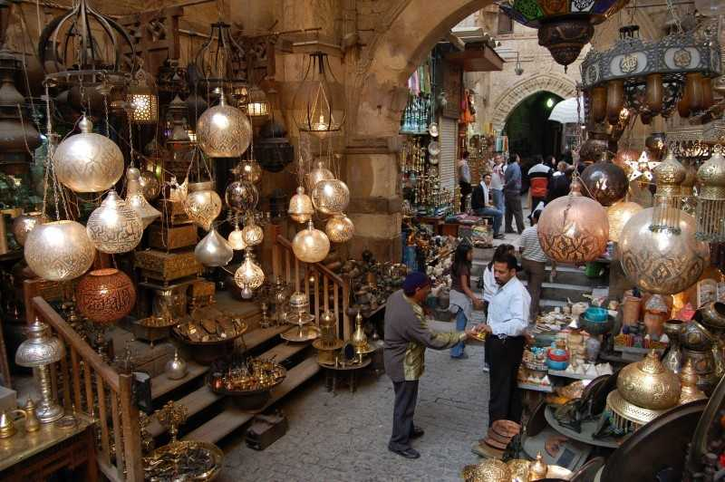
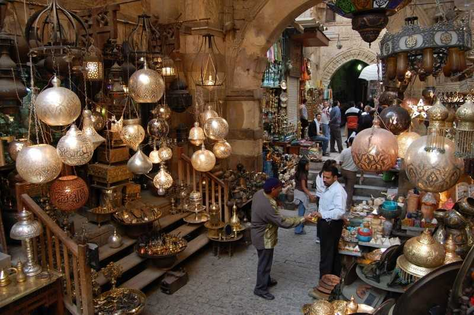

It provided in Cairo antiquities from various Pharaonic, Roman, Christian, Islamic and modern civilizations. Cairo is also rich in famous landmarks such as: Mary’s Tree, the Hanging Church, Al-Azhar Mosque, Amr Ibn Al-Aas Mosque, Salah El-Din Citadel, the Egyptian Museum, the Museum of Islamic Art, the Coptic Museum, Prince Muhammad Ali Palace in Manial, the Japanese Garden, Cairo Tower, and the International Garden , the October War Panorama, the Cairo International Conference Center, the exhibition grounds and the Opera House, and there are 89 hotels and tourist villages in Cairo.

 
